Copper Coil Alcohol Heater¶
(Sometimes called an Alcohol Jet Burner)
Read This First¶
WARNING: Non-negotiable safety rules
Never refuel while the burner is lit or still hot.
Keep spare fuel containers far from the burner.
Keep ventilation open at all times.
Keep the unit away from children, pets, and loose fabric.
Never leave an open flame unattended while sleeping.
Keep a working CO detector nearby in enclosed spaces.
What It Is¶
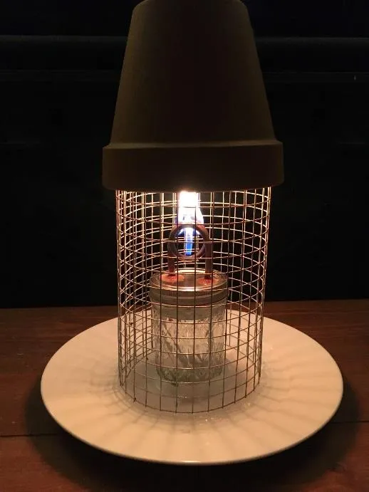
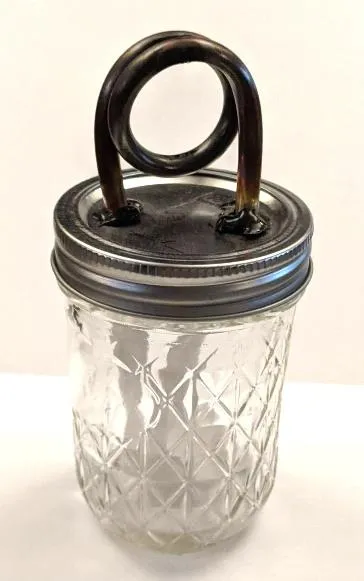
Great for small enclosed spaces like tents or a small room
Safe to use indoors
Bad for outdoor use - the flame blows out easily
Can be used for heating or cooking
Complete Heating Kit¶
An Alcohol Burner
A Safety Enclosure
A few lighters (preferably the long-stemmed kind)
A gallon of fuel
Tissue or paper towels to clean the burner coil
Optional: a second, smaller, wire mesh cylinder for cooking and a milk crate to keep it off the floor
Quick Start¶
Build the copper coil burner and let the J-B Weld cure for 24 hours.
Build the safety enclosure (base, mesh cage, and Terra Cotta cap).
Fill with approved fuel, light near the fume hole, and confirm stable flame.
Place in a flat, ventilated area and keep spare fuel away from the unit.
Expected Performance Ranges¶
Typical burn time with an 8 oz. jar: about 5-6 hours
Typical lighting time from cold copper: about 10-30 seconds
Typical flame range with 5/64 inch fume hole: about 2-6 inches
Typical water heating performance: simmer in about 10 minutes, boil in about 20 minutes (varies by fuel and setup)
How It Works¶
How does it work? The burner uses nothing but fumes from the alcohol fuel.
What makes alcohol so dangerous to burn is the fact that it’s so incredibly flammable. This design mitigates that danger and actually uses it to our advantage.
Alcohol fumes or vapors from the liquid fuel in the jar collect in the copper pipe and when the pipe is heated, the fumes expand and are forced out a tiny hole at the bottom of the copper loop (the fume or jet hole). These fumes combust as soon as they exit and hit the open flame which then heats the top of the copper loop. It’s a constant cycle of vaporized fumes being forced out of the hole and then combusting.
The alcohol fumes will burn until the flow is interrupted by tipping the burner sideways or blowing it out like a candle. This adds extra safety as they will go out automatically if they tip over. The jar is sealed, making it spill-proof, as well.
Is alcohol safe to burn indoors? Yes, alcohol burns very clean and is safe to use indoors. There are more details on this in the “Fuel” section below. The recommended fuels are Isopropyl or Ethanol Alcohol (most commonly found as rubbing alcohol or liquid hand sanitizer). A 6-8 oz. jar of alcohol like we use in this design can burn for 5-6 hours. It’s also safe to cook over, so you can roast marshmallows or use a frying pan or pot to cook over the flame.
How do you light it? The copper coil must be heated until the fumes expand enough to start flowing out the tiny hole at the bottom of the copper loop so they can combust.
Basically, hold a lighter (or other open flame like another lit alcohol burner) against the copper near the fume hole until you see the flame start to grow larger. This can take 10-30 seconds depending on how cold the copper is.
The easiest way to light the burner is to first turn it completely upside down for a few seconds and fill the copper loop with alcohol fuel. When you put it upright the alcohol will drain back into the jar but this leaves extra fumes behind and it’s easier to light.
Note: If the flame goes out, but the copper is still hot, it can be re-lit almost instantly.
If you are using the same 1/2 inch wire mesh that we use in our design, you can reach a long-stemmed “grill lighter” through the holes in the wire to light or re-light the burner without moving any part of the enclosure.
Why does the heater need the safety enclosure? This design is intended for tents and similar structures. Open flames can burn a tent wall or start other things on fire in an enclosed space. The jar needs a stable surface in a tent that is often full of bedding or might have an uneven floor. Stability is provided by the heavy dinner plate on the bottom that acts as a weighted, flat base. The wire mesh cage ensures that the burner has a steady supply of oxygen for safety and keeps things from brushing against the open flame and igniting, accidentally. It also stays cool to the touch. The Terra Cotta pot on top helps contain and control the open flame and also heats up to provide efficient, radiant heat.
If you have the burner sitting on a steady flat surface like a table inside a building and there is nothing flammable around it and there is no danger of it tipping over or pets disturbing it or getting burned and you promise not to burn yourself playing with the flames too much… then you don’t need an enclosure. Although, the Terra Cotta pot does help radiate the heat to a smaller area around the burner if you are using it for heat in a power outage or emergency situation.
Heater Safety¶
The heater needs to be set up in a flat, stable place near the center of the tent or structure with nothing immediately above it. The flame is mostly contained but can still flicker out of the vent at the top of the Terra Cotta pot.
It should not be left burning unattended. It will extinguish automatically when it runs out of fuel or is tipped over, but it’s still an open flame and still shouldn’t be left unattended. We know this will probably happen anyway, people are cold and tired. Just be careful.
Your extra fuel should be stored away from the burner itself. If you can put it in another tent or location entirely, that’s best, but if not make sure the cap is tight and put it as far from the alcohol burner as possible.
The heater can be left to burn for hours without any issues as long as you respect which parts get very hot. It can also be used more efficiently by doing a short 15-30 minute burn, then blowing it out and letting the Terra Cotta contain and radiate heat for about 15 minutes before relighting it.
Before Lighting Checklist¶
Unit is on a flat, stable surface
Nothing flammable is immediately above or touching the unit
Ventilation openings are clear
CO detector is present and working
Spare fuel is capped and stored away from the burner
After Use Checklist¶
Fully extinguish flame
Wait for cool-down before touching hot zones
Wipe soot from coil once cool
Check lid seal and wick placement
Store fuel away from heat and flame sources
Heat Zones¶
HOT: The metal Jar Lid and Terra Cotta Pot will get very hot. The Terra Cotta will heat up like an oven dish to a few hundred degrees. Touch it only with proper padding. Or simply do not touch either of these parts for 10-15 minutes after putting out the flame.
The copper loop gets very hot but cools very quickly. It will only stay hot for about 2 minutes after which it will be cool enough to touch.
WARM: The Jar itself will get very warm or even hot as it picks up heat from the metal lid but cools down in about 5 minutes. However, it only heats up where there isn’t fuel. The liquid alcohol will act as an insulator and the glass around it won’t get hot at all. The bottom of the jar will stay cool.
COOL: The wire frame stays cool to the touch. You can use it to carefully pick up and move the Terra Cotta cap if needed.
The Porcelain Plate used as a base stays completely cool and can be used to carefully move around the hot heater unit if needed.
We have done some testing on whether the hot copper burner poses a hazard after it goes out by keeping the hot copper part in contact with a variety of flammable paper types and alcohol fumes immediately after extinguishing the flame. Nothing ignited or smoldered. The burner appears to cool too quickly. As long as nothing touches the open flame, the risk of starting a fire is very low. It can still burn your skin right after the flame goes out, though.

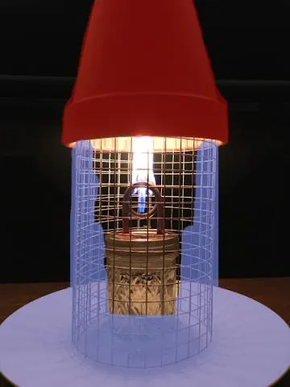
Carbon Monoxide Safety¶
A very common and important question people ask is “Do alcohol burners produce dangerous amounts of Carbon Monoxide (CO), especially in small enclosed spaces?”
In a word: no. Carbon Monoxide (CO) is not a significant danger from alcohol burners or stoves, because alcohol does not produce CO as a byproduct of burning, unlike most other fuels, but the more you know about it the better you can mitigate any possible danger.
Carbon Monoxide is an odorless and invisible gas that is given off during combustion. The only way to detect Carbon Monoxide is with a small, battery powered CO detector. Carbon Monoxide can poison you by replacing the oxygen in your blood leading to flu-like symptoms that start with headaches, fatigue, vomiting, and blacking out and can culminate in death fairly quickly at very high CO concentrations. When you burn things that contain carbon like natural gas, propane, gasoline, kerosene, oil, coal, or wood, it can give off CO. With proper ventilation the CO will usually dissipate harmlessly in the air.
This is why it’s a bad idea to burn a propane or kerosene lamp or stove or to burn small wood fires in an enclosed area like a tent and why you need to be careful around propane gas stoves and grills, gas generators, smoldering wood fires lit indoors, and a car left running in a garage. Even cigarettes produce a bit of CO. The less oxygen the fire has to properly combust, the more CO it is likely producing. Proper ventilation is the key to safety and why some things should only be burned outside.
It’s important to remember that any flame is capable of creating Carbon Monoxide if it doesn’t have sufficient oxygen for combustion. However, alcohols are much simpler chemically and not derived from petroleum. Alcohol fuels combust completely and burn more cleanly than other fuels. A copper coil “jet” heater will simply stop burning the alcohol fumes without sufficient oxygen because there is no other fuel or wick to maintain the combustion. Also, the only byproducts of pure ethanol when burned are Carbon Dioxide (CO2) - note the 2 there, CO2 is not CO - and water.
While tents breathe well, there are rare cases where it could be dangerous. For example, an ice storm coating the outside of a tent (or cabin) could create a situation where there is inadequate oxygen inside the enclosure and anything burning would be stifled and would not combust properly. Alcohol is one of the safest fuels to use, but there is always a small risk of CO with any open flame. If you are concerned, please make sure to have a CO detector nearby and always be mindful of ventilation and oxygen levels.
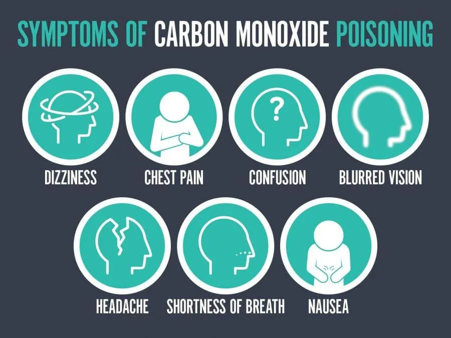

Fuel¶
Isopropyl and Ethanol alcohols are the fuel you want to burn in these heaters.
Common Fuel Types¶
70% Isopropyl rubbing alcohol
90% Isopropyl rubbing alcohol
90%-95% Distilled Liquid Hand Sanitizer (can be either kind of alcohol)
WARNING: Do not drink rubbing alcohol! Isopropyl alcohol and Denatured ethanol alcohol are poisonous and can kill you even in fairly small amounts.
Isopropyl Alcohol: Most rubbing alcohol is isopropanol-based. You’ll see it listed as “Isopropyl Rubbing Alcohol” and these are readily available at most any grocery store or pharmacy and even most gas stations stocked near medical or cleaning supplies. Isopropyl alcohol is poisonous when consumed and often has additives to make it bitter so people won’t drink it and kill themselves.
Hand sanitizer is often given out free, by the gallon, to humanitarian organizations.
Isopropyl alcohol burns with a warm yellow flame and a tiny bit of black soot from the additives burning off. It produces a lot of heat, but is easy to put out.
The higher the alcohol content the better it will burn (but they all work very well). The percentage listed on the bottle that isn’t alcohol is mostly water and a few tiny additives.
Denatured Alcohol¶
Denatured Alcohol is the other main fuel type you will see. It’s made from Ethyl (Ethanol) alcohol, which is usually drinkable, but has been “denatured” with bitterants and poisonous substances to make it undrinkable and therefore subject to different regulations. It’s a very pure distilled ethanol and is sold specifically to be used as a clean burning alcohol stove fuel. It’s often found at hardware stores in the paint section and at outdoor supply stores and online. It costs about $16 a gallon (which is about twice as expensive as 70% Isopropyl alcohol).
Denatured Alcohol burns very hot with a blue flame and is sometimes almost invisible.
Because it burns very hot, that makes it great for cooking.
It can be burned in these copper coil burners and works very well with some caveats. The amount of heat it puts out makes it a lot more dangerous. It can superheat the air in an enclosure and is
more susceptible to flare outs. It can get the Terra Cotta hot enough to crack. The copper coil burner has to tip over almost 90 degrees before denatured fumes will stop flowing and go out.
If you plan to burn Denatured Alcohol Fuel, use the smaller 1/16 (0.4 mm) hole when building the copper coil and increase the height of the cap above the flame a few more inches when cutting the wire frame for the enclosure. Also, plan on burning it for much shorter amounts of time and take more safety measures when handling the Terra Cotta pot and alcohol burner itself.
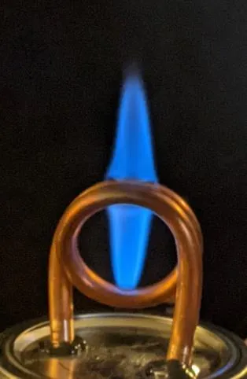
These are the local average fuel costs from stores in late 2021. The best source of fuel is still the high alcohol content liquid hand sanitizer given out for free here. If you need to buy fuel, that’s a pretty good estimate for what to budget. An 8 oz. jar will burn for 5-6 hours.
Generic Grain or Wheat Alcohol: Ethanol alcohol comes in many forms and is a “drinkable alcohol”, except most industrial products aren’t drinkable. It’s distilled to use as an equipment sanitizer or cleaning agent and those are usually labeled as rubbing alcohol with denaturing additives to make it undrinkable. Some geographic areas sell grain alcohol to be used as a fuel additive or as a consumable neutral base to add more alcohol content to other things. Grain Alcohol is just Ethanol, often distilled in a very pure form, around 95% to 99% ABV. It will be called Distilled Ethanol, Grain Neutral Spirit (GNS), Extra Neutral Grain Alcohol (NGA), Neutral Grain Spirits, or Rectified Spirits at wholesale for labs and businesses and might be marketed to consumers as Everclear, Alcohol-95, and Golden Grain. If it’s pure and doesn’t have a bunch of additives, almost any Ethanol can be used as a heater fuel, however Heater Bloc has not tested most of these, we assume it burns similar to 95% distilled hand sanitizer, but might be closer to denatured alcohol stove fuels when burned.
WARNING: Don’t drink any of the industrial grain alcohols, even if they aren’t denatured. It’s too pure (usually 99% ABV) and can cause alcohol poisoning in even tiny amounts. In normal consumer use, it will be heavily diluted.
Fuels to Avoid¶
Hand sanitizers with additives (scent, dyes, aloe, skin-care additives)
Unknown or mixed denatured alcohol blends without ingredient disclosure
Methanol-heavy stove fuels for indoor use
Only burn dye-free, scent-free liquid hand sanitizers in this design. Many camping stove fuels sold as “denatured alcohol” include methanol or other additives. Check the label before use.
Refueling and Burn Maintenance¶
All of these fuels except Denatured Alcohol cause a small bit of soot build-up on the copper coil.
It’s not flammable and is very light and powdery. It WILL cause the heater to burn less efficiently as it can’t heat the copper coil as well. After a few hours of burning, let it cool and clean off the soot with a tissue or paper towel or just knock off most of it with a small stick.
The higher the alcohol content in your fuel, the less soot tends to build up.
Also the higher the alcohol content in your fuel, the less water it will leave behind. A bottle of 70% Isopropyl is about 30% water. The more alcohol fumes you burn off the more water gets left behind. If your flame is very small or you are having trouble lighting it, that’s probably a fuel issue. The fuel is watered down and not potent enough. Dump it out and add fresh fuel to the jar.
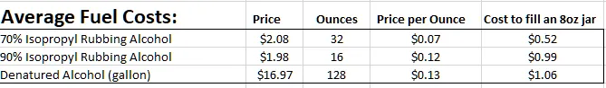
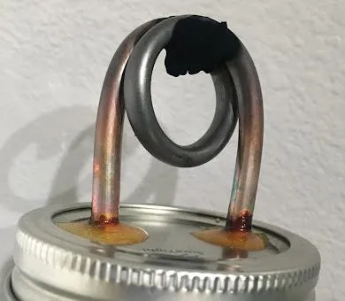
Parts and Costs¶
(Also your shopping list)
The cost of the Copper Coil Burner is around $2.00 each and the Enclosure is about $5 in parts. Each Heating Unit in total is going to be around $7 on average, which is actually an amazing price point.
Ask Around Your Community: You can save a lot of money if you already have some of the things you need. I don’t think anyone will be buying cotton T-shirt rags if you already have an old white T-shirt to cut up. Canning jars and dinner plates appear on garage sales all the time, people have these things in storage. “Buy nothing groups” often have old dinnerware.
Find a Local Supplier¶
We used Big Box stores to make prices relatable out of our local region. You might also want to find a local supplier, like a local garden store or local hardware store, instead. Talk to your local businesses and see if they want to help, they can sometimes order at wholesale prices.
Copper coil tubing is often used in air conditioners, ice makers, humidifiers and refrigeration as well as small gas lines and water lines. Talk to a local contractor or appliance store and see if they can save short cut-off scraps for you. You only need 8 inches of copper tubing to make a copper coil burner. Building Contractors can also buy in bulk at slightly cheaper prices on things like silicone caulking.
Don’t Use Any Random Jar: As we documented in the Heat zones part above, there is a heat differential in the glass from heating and cooling different sections unequally. That can cause glass to crack or break. We highly recommend sticking to canning and mason jars which are designed to withstand the heat from the boiling water bath of the canning process. After weeks of testing and use the jars have not cracked and appear to be able to withstand the stresses. That potential to break is always there, though, especially if using these in sub-freezing temperatures with a very hot fuel. Heat tempered glass is ideal for this, don’t use a random pickle jar.
Again, these are bulk prices. Your best price point is going to be around building a dozen heaters at a time. If you only want to make a few of these for fun, you’re going to have some extra overhead costs due to leftover materials. The copper tubing comes in a 10 ft roll and you’ll have a lot of extra J-B Weld (although that’s honestly pretty great for repairs around the house). If you only make, like, 2 burners, I hope you plan to do some canning with the other 10 jars in the pack. Maybe build a small animal cage with the leftover hardware mesh and get a gerbil.
More realistically, when you are done building, try to find a local group making these for your community or even a Maker Space and donate your extra copper and other supplies so they can build more.
You also want to budget some lighters.
The long stem ones are about $1-3 each
Regular lighters vary from $.25 to $1 each.
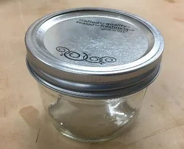


Here’s an idea of what it’s going to cost you to make these heaters and what you need to get started:
These are late 2021 prices and regional to Heater Bloc.
Some Alternative Prices: Things like different size canning jars or a larger roll of copper tubing or wire mesh. You can also get cheaper caulking, but it takes a lot longer to dry. The shorter, wide-mouth canning jars let you use less wire for the enclosure and make it more stable, but cost a bit more.
These lists are just a guideline. Use whatever you have available and whatever you can find locally.
(More advice on variations and adapting to what you have appears later in this guide.)
This doesn’t include tools.
None of the tools are specialized, but you’re going to need to own or borrow all of them. Tools needed are listed in the build sections below.


How to Build a Copper Coil Heater¶
Short Version¶
Cut the copper tubing to length. Fill with salt and bend into a one-inch loop. Drill holes in the jar lid and seal the copper loop to it with J-B Weld and let it cure. Drill a tiny fume hole. Add the wicks and fuel and screw the jar closed.
Silicone the dinner plate so the burner and enclosure can’t slide around and let it dry. Cut the hardware mesh to size and make a cylinder out of it. Put the jar burner in place, add the wire cage, and put the Terra Cotta cap on top. Test light it to make sure it works.
Give it away to someone who needs to keep warm and then make another one. You’re done.
How to Build the Copper Coil Jar Burner¶
Tools Needed¶
Safety glasses
Handheld drill
5/64 drill bit
1/4 drill bit
3/8 countersink drill bit
Hacksaw with a good metal blade or a small metal tube cutter
Parts Needed¶
Masking tape
Table salt
Squeeze bottle cap or tiny funnel
Small cup or bowl of some kind to catch loose salt
1-inch diameter dowel or pipe or socket
Vise (maybe)
Sharpie
Sandpaper (180 grit or similar)
Scissors
Scrap wood to drill into
Disposable gloves (maybe)
Paper plate or cardboard scrap
Small clean applicator stick, like a disposable chopstick
Optional: center punch
Optional: small 12-inch pry bar
1/4 inch copper tubing (found in 10 ft and 20 ft lengths)
Glass canning/mason jar with lid (6 oz. or 8 oz.)
J-B Weld two-part epoxy
Cotton T-shirt wick material
Remember if you work in teams, lots of steps can be sub-divided up. One person can bend copper while others sand and clean up burrs. One person can be cutting wicks while others feed them into the burners. One person can be cutting wire while others hook the cages together.

Make the Copper Coil: (This is definitely the most involved and precise part.)
You’re going to be drilling and cutting and deburring copper and aluminum as well as using epoxy. Please use safety glasses to protect your eyes when necessary.
Cut a piece of copper tubing to about 10 inches in length
Note: You could go longer than 10 inches, like 12 inches, until you get really good at bending it. This doesn’t have to be exact, but don’t crush the ends closed. The best tool to cut the copper with is a Hack Saw or a Metal Band Saw (if you have a shop). Copper Tube Cutters (the kind plumbers use with a small blade that you spin around the pipe in a tight space) work okay. This small copper tubing tends to crush easily so be gentle and not overzealous with how hard you tighten the cutting blade, tighten it and spin, then tighten again and spin and repeat until you have a nice cut. If you use a hacksaw, have a nice new blade and let the saw do the cutting, you don’t have to push very hard, copper is soft.
Cap one end of the copper tube piece. Small pieces of tape honestly seems to work the best for this. Masking tape is the easiest to work with and the cheapest. Duct tape and packing tape work, too.
Fill the tube with table salt using a tiny funnel or a paper cone or your hand that you try to cup round the tiny little hole and pour salt into it, you’ll make a mess, but it kind of works… the best tool we have found is the lid to a squeeze bottle. Like a glue bottle or ketchup bottle with a tiny nozzle… or something similar. You can buy these bottles cheap and sometimes just the caps.
Note: It takes surprisingly less salt to fill the tube than you think it will.
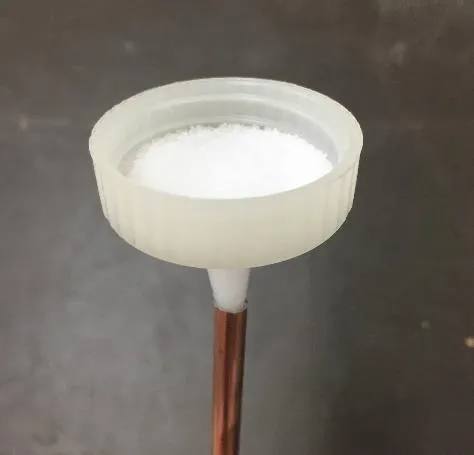
Tape that end closed, too
Note: If there isn’t anything inside the tube it won’t bend, it will just kink and become useless. Fine sand and rock salt also work. Table salt seems to work the best. We tried freezing water inside it once, that didn’t work, either. Use salt.
Set-up your pipe bending station. Find a sturdy 1-inch diameter tube or dowel or metal rod or large socket that you will bend the copper pipe around. Put this into a Vice or something similar to hold it securely. The key to getting a good bend in the copper tubing is to make sure the thing you are bending around is very secure and sturdy. If you are doing a bunch of these make a jig out of a wooden dowel or metal rod.
Bend the copper tube into a complete loop around the 1-inch dowel using your hands. Use steady, but slow pressure. There are a few different types of 1/4 inch copper tubing. Some are thinner or weaker than others. Those need pressure near the dowel to bend well, others, need pressure out at the end of the tubing.
Note: It can be a little bigger than an inch but you won’t really get a nice bend trying to go much smaller than that. Be prepared to mess up a few times before you start getting the bend just right. Also, you want a gap between the coils, if it’s too big you can flatten it a bit, but you don’t want them touching completely. A 1/8 to 1/4 inch gap is about right. The ones below got a good bend, but will probably be flattened a bit. If it’s too flat or close together, carefully use a wide, flat tool like a small 12” flat pry bar or stiff-blade putty knife to widen the gap a little.
Reference Layout¶

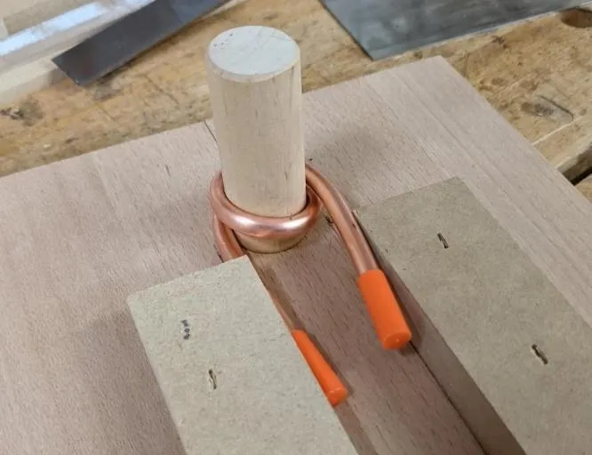
(Ignore the orange cap things, they don’t work as well as tape)


Cut and Clean Up the Copper Coil Ends¶
If it didn’t bend evenly, you can cut the copper tubing so both ends are even. Shortening them is not required, it’s just for aesthetics, but it makes feeding it into the jar lid and feeding the wicks in a lot quicker and easier, later on. Do that here after dumping the salt.
You need to keep about 3/4 to an inch of pipe below the loop to have enough to feed through the jar lid.
The ends can be rather rough after cutting them. We need to clean that up a bit. Some of this is probably optional, it’ll still work if you don’t clean anything up as long as you can get the wicks into the ends of the copper and don’t cut yourself on the sharp edges.
Remove the tape and dump the salt into a cup to be re-used. Not re-used for cooking, just for making more coils, it might have copper shards in it. Or just dump it in the trash, whatever. You can also use an air compressor to blow it out, or rinse it out with water, or even soaking it in water to let the salt dissolve, but shaking usually works.
Clean up the burrs and rough edges. Use sand paper (180 grit works great) and clean up any burrs and rough edges on the outside and the ends of the copper tubing. Having your sandpaper on a sanding block helps sand the ends (or if you have a shop, use a belt sander).
Use a 3/8 countersink drill bit and drill lightly into the end of the tubing to clean up the inside and remove any burrs from the cutting process. Making the inside smooth will also help a lot later when feeding in the wicking material.
Note: A single flute counter sink drill bit is the best, if you can find one. Alternatively, you could just jam some small needle nose pliers in there and knock out any obstructions. You can find hand tools specifically for de-burring metal and there are handheld reamers & countersink tools that work instead of using the counter sink drill bit.
Use a piece of loose sandpaper to rough up around the ends of the tubing. This is to help with adhesion of the epoxy later. After sanding, clean it off with a rag and some rubbing alcohol or acetone.
Note: We didn’t include this in the tools section, but you’re going to want a vacuum or broom to clean up your mess when you’re done. We just assumed you’d realize this was going to be messy and take care of that without us mentioning it.
Feed the Copper Coil into the Jar Lid¶
Put the ends of the copper tube against the jar lid and mark where you need to drill. Mark the lid using a sharpie or something similar.
Using a 1/4 inch drill bit and a hand drill, punch two holes through the jar lid. Put it down on a flat surface like a piece of scrap wood you don’t care about punching holes in and drill straight down. Don’t try to just hold the lid in your hand. Also, don’t try to drill it while the lid is screwed onto the jar. The bit is going to go through the thin metal really fast. If your bit goes through and hits the glass it could break the jar.
Clean up burrs and rough edges on the jar lid holes with the 3/8 inch counter sink drill bit. This part you can do while the lid is screwed onto the jars if you want to.
Rough up the outside of the top of the metal jar lid around the hole with sandpaper. This will help a lot with long-term adhesion when you apply the J-B Weld later. After sanding, clean everything you just sanded with a rag or paper towel and rubbing alcohol or acetone.
Feed the ends of the copper tubes through the jar lid holes. You’d think this would be the easiest part, but the tubing likes not to line up, so work it a little and bend the copper a tiny bit if needed.
You want the copper loop about 1/2 inch above the jar lid with at least 1/4 to 1/2 an inch of the tube inside the jar lid. You can have a lot more inside the lid, but you don’t need more.

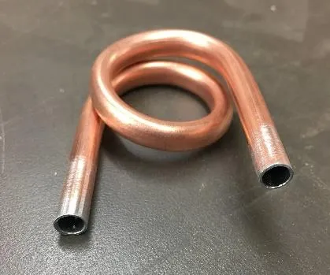

Seal the Jar Lid Holes with J-B Weld¶
Best Option: J-B Weld Cold Weld Twin Tube Epoxy¶
“J-B Weld” is a heat-safe (up to 550 degrees F) two-part epoxy that is available at about any hardware store. We recommend the “J-B Weld Cold Weld Twin Tube Epoxy”. The 2 oz. package can make 20-25 heaters and the 10 oz. “Pro” size is good for over 100.
The roughing up with sandpaper you did in the last two sections will help with adhesion. If you waited a long time between these steps, make sure the areas where you are applying J-B Weld on the jar lid and copper coil are clean.
You’ll need a disposable mixing surface, like a paper plate or clean piece of cardboard or scrap wood. You might need some disposable nitrile or latex gloves.
You also need an applicator stick of some kind. Craft stores sell “Wood Spatula Applicators” or “Craft Sticks” and similar things. Popsicle sticks are going to be too wide. Something similar in size to a disposable chopstick works great. In a pinch, you can cut up a free paint stirring stick.
Follow the directions on the J-B Weld packaging, but the basic steps are below.
Mix the J-B Weld you need in small portions. Squeeze out a little bit in equal amounts from each tube and mix it together with your applicator stick. This activates the epoxy, so you don’t have very long to use it. A small portion can seal several jar holes.
Apply a small piece of J-B Weld around each hole using the applicator stick. Make sure you get all the way around the copper. It doesn’t take very much. You also don’t have very long to use it before it starts to set, so glob it on there. You can smooth it out a little with your finger if you are wearing a disposable glove.
Let it sit for a full 24 hours. Preferably, not inside your house. It will smell for the first few hours as it sets. The J-B Weld will harden in about 5-10 minutes and you’ll want to give it a full 24 hours to be fully cured and ready for heat.
Alternative Option: J-B Weld Steel Stick¶
There’s another type of J-B Weld that also works called “J-B Weld Steel Stick” that is the same two-part epoxy, but in a putty form. It’s only rated to 300 degrees F, though. It takes a bit more and we’ve found one 2 oz. “steel stick putty” can make about 12 to 15 heater lids. So it’s about half as affordable as the original J-B Weld. However, it doesn’t need to be mixed on a surface or applied with a stick. This makes it better for “field repairs” and quick applications.
Cut or rip off a small piece (about a 1/4 inch worth) of the epoxy putty and work it with your fingers until it mixes and activates. Try to get equal amounts of both the grey and black parts, which means cutting it off is probably safer. You really want to cover your fingers with something like disposable nitrile gloves, or in a pinch, a sandwich bag, but if you have a place to wash your hands, you don’t absolutely have to. The J-B Weld will become stickier and warmer as it activates.
Use your fingers to work it in and around the copper pipe and jar lid hole. You have a short amount of time to work with it before it hardens. It’ll look kind of like a little putty volcano shape when you’re done.
Let it sit for a full 24 hours to cure. Same as above.
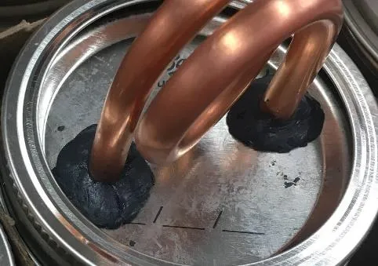
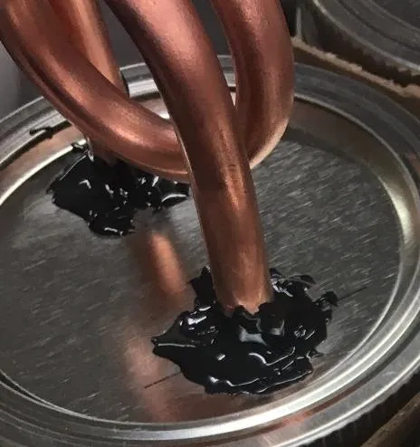
Drill the Fume Hole¶
After the J-B Weld is cured, you want to drill a small hole in the top middle of the bottom copper loop.
This hole is very important and acts as the Flow Regulator for the alcohol fumes. How big do you want that flame to get?
Choosing a Fume-Hole Bit Size¶
1/16 (1.5 mm) - tends to be too small for isopropyl alcohol; the flame will be about the size of a burning candle, but this size works great if you are planning to use Denatured Alcohol.
5/64 (2 mm) - recommended size. It burns well, but the flame stays in the 2-6 inch range, typically.
3/32 (2.5 mm) - the flame will vary from 2-8 inches above the hole and tends to work well, it’s just harder to contain.
(You can always go bigger, you can’t go smaller)
Small drill bits tend to also be very short. We recommend finding one that will let you drill straight down from the top between the copper coils. If your drill bit is too short to drill in from the top of the loop, you can drill carefully from the side, but get the hole in the middle-center of the copper tubing. This is a delicate, focused step. Only put a hole on the top side of the tube, don’t accidentally punch all the way through both sides.
Note: If you happen to have a center punch, you can make a tiny dent in the middle of the copper tubing to help keep your bit from slipping while you drill. It’s not necessary, just helpful.
Add Wicking Material: A wicking material needs to be fed into the holes in the copper tubing. This will be inside the jar and carry alcohol up into the copper tube. Fumes coming off the wicking material will feed the flame.
Anything plant-based seems to work: string, lantern wicks, cotton balls, even rolled-up paper towel will work for a while.
Woven cotton (t-shirt) material is our preferred wick. It works wonderfully and is very affordable and easy to find. Use an old white t-shirt or handkerchief or pack of t-shirt rags and cut it into long skinny strips. We use white so we don’t have to worry about fabric dyes leaching into the fuel.
You need two identical wicks, one for each end of the copper tube.
The wicks need to be about 1/2 to 1 inch wide (depending on the thickness of the cotton material) and long enough to reach the bottom of the jar from about the center of the copper loop.
To feed it into the copper pipe, use a roll and push motion and feed it into the tube until it’s about an inch or so above the jar lid inside the pipe (just estimate).
Now, fill with your choice of fuel and screw the jar lid on tight. The Copper Coil Burner is done!

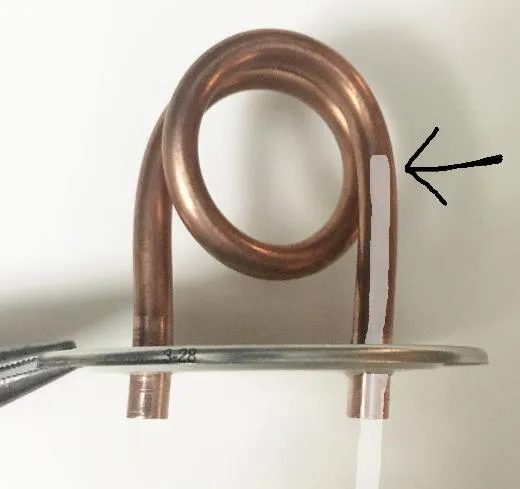

How to Build the Safety Enclosure¶
Building the safety enclosure part isn’t as specific as building the copper coil burner. I’ll give you specifics on one type and a lot of general advice on adapting this to your needs because, honestly, use what you have and make it work. The things we can find cheap in stores here won’t be the same where you are.
Enclosure Components¶
A stable, flat surface so the burner can’t tip over easily on uneven or soft surfaces and can’t easily slide around.
A breathable barrier that prevents casual contact with the flame and reduces burn and fire risk while still allowing enough oxygen for combustion. This can also serve as a cooking platform for skillets and pots.
A fireproof cap that keeps upward flames mostly contained and helps radiate and contain heat to a smaller area for better heating efficiency.
The best and most affordable solution we’ve found so far is to use a thrifted heavy stoneware or porcelain dinner plate or wide pasta bowl for the base, ½ inch wire “hardware mesh” (readily found at hardware stores for building small animal cages) for the breathable cage around the flame, and a Terra Cotta Pot as a cap for the top. Terra Cotta clay used for rough earthen pots is heat safe and has properties similar to an oven dish. It can take a lot of heat and makes a great flame resistant cap. Silicone caulking is used to create thick rubbery rings on the plate to keep burner and wire enclosure from sliding around.
The most common jar we’ve found for the burner piece is about 4 inches tall and holds 8 oz. of fuel. There are some short 2.5-inch “wide-mouth” mason jars that work well, too if you can find them. The shorter the jar, the shorter your overall enclosure can be and because Terra Cotta makes it top heavy, you don’t want to make things too tall and skinny, so that’s a bonus. The entire design has to adapt around how tall your jar burner is and how big your Terra Cotta piece is.
Instructions for Building an Enclosure with a 4-inch Tall Jar Burner and a 6-inch Wide Terra Cotta Pot:
Tools Needed¶
Long-nose or needle-nose pliers
Small diagonal cutter or a small flush cutter
Caulking gun
Knife to cut caulking tip open
Wire or a nail about 3 inches long to puncture the foil seal inside the caulking tube
(Small cheap pliers and cutters work fine here.)
Parts Needed¶
Stoneware dinner plate or wide pasta bowl with at least 6 inches of flat space in the middle
The copper coil burner (or at least the jar part of it)
Any size roll of 1/2 inch galvanized hardware mesh (you need an 8 by 18 inch piece)
6-inch wide Terra Cotta pot
Silicone caulking
Trash can or box
Create the Wire Cylinder¶
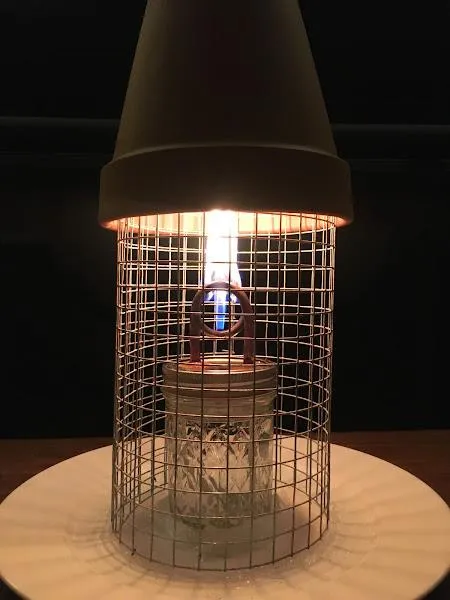
There’s a little bit of circle math here, but I’ll get into that later. You are going to be creating a cylinder that hooks onto itself and fits inside of the 6-inch Terra Cotta pot. The inside of the pot actually measures about 5 1/4 inches across so your cylinder can be about 5 inches in diameter.
A 16 inch long piece of wire will bend into a circle of approx. 5 inches. But you also need a 1 inch overlap AND you need to leave loose wires at one end for bending.
The cylinder needs to be 8 inches tall. This leaves about 1.5 to 2 inches of empty space above the top of the copper coil burner before the cap encloses it. This seems to be the sweet spot in trapping the heat in the pot on top without having too much flame shooting out the vent hole or overheating the Terra Cotta.
The cool thing about 1/2 inch hardware mesh is you don’t need to measure it, you can just count the squares because each one measures 1/2 an inch. If you are making a whole bunch of these, cut yourself a couple little long skinny wire strips as guides that are the length you need to cut each side of the enclosure for quick measuring.
Open up your roll of 1/2 inch hardware mesh. It’ll want to keep its bend from being rolled up, use that to your advantage when making cylinders, don’t try to bend it the other way, it’ll make a mess.
Use the angle cutters to cut a piece of wire mesh 8 inches tall and 17 inches wide. The top and bottom of the cylinder need to be smooth. So does one side. After you count out 17 inches wide go an extra half an inch and cut the wire so you have a bunch of wire pieces poking out on that end. You’ll bend these over to hold everything together. Sometimes a diagram works better.
Wire Layout Reference¶
Note: The easiest way to make a bunch of these at once is to just measure out your long side 17 inches on the curve (plus the extra bending wires) and then cut straight down all the way. You’ll have a piece 17 wide and 3 feet tall. Now cut that into 8 inch tall sections. You’ll get 4 pieces and have like 2 inches of trash.
You’ll sometimes end up with a row of poking out wires you won’t need. Like when you cut the 8 inch sections. Have a trash can or cardboard box handy and clip these directly into it to make less of a mess.
Now bend over each of the short wires to make hooks.
Bend the entire piece into a cylinder and hook it together with a 1 inch (two little squares worth) of overlap. Use the needle nose pliers to bend the wires tighter once you have it hooked in place to make a nice tight cylinder. It can help to bend the two End wires up and around the top and bottom of the frame to keep it from sliding. If any of the wires break, don’t worry too much, there are lots left to hold things in place.
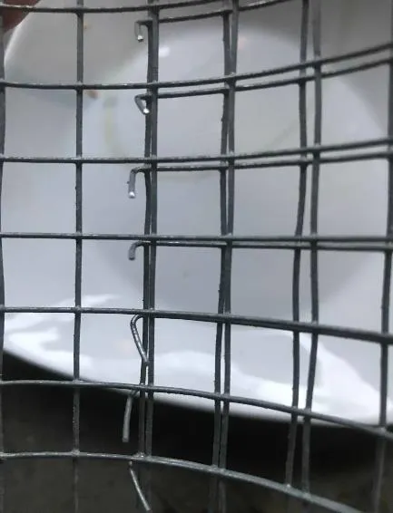

Make the Plate Non-Slip Using Silicone: Use “silicone caulking” (which is a fireproof rubbery substance used for sealing around windows and other things to keep water out) to create a thick ring of silicone to hold the jar burner in place on the plate. Then a second ring to hold the wire mesh cage.
Cut the tip off your silicone caulking tube so you have the widest option possible.
Puncture the foil with a wire or nail and put the tube in your caulking gun.
Hold the Jar in the middle of the plate and put a big thick blob of silicone all the way around it. Spin the plate to make this easier. Then go around the jar again to make the silicone thicker and taller.
Now add more to keep the wire mesh cylinder from slipping around. The best design is to make several radial silicone lines coming off the center ring (like sunbeams). Try to keep line thickness fairly even. You don’t need to make these lines as thick as the jar ring.
Note: When you put the wire cage and pot on these silicone lines, the wire will sink in a little bit and keep things from sliding around. It works pretty well. Making a circle around the wire enclosure, like you did the glass jar, just doesn’t seem to work well because it has to be too precise. The cage can still fall over, but it won’t slide around.
(Use a wide nail or screw or plastic wrap and tape to close off the tip of your silicone tube if you didn’t use it all).
Leave that somewhere NOT inside your house (this stuff smells as it dries) for at least the first day. It’ll take about 3 days for it to set up completely because you’re putting it down so thick around the jar. Yes, really, it takes that long. If it’s too cold outside it won’t set at all. Putting these in a garage or utility room or shop is a great option, if you have it. Sometimes it’s good just to pre-make these plates if you have the Jars even if you haven’t done the copper coil part for them, yet.
Note: 100% silicone dries faster, so that might make it more valuable to you to get these made quicker. The Acrylic Latex caulking with silicone can take over a week to dry. Get the stuff that starts white and dries clear so you can tell when it’s dry.
After it’s dry, you’ll need to carefully cut away the silicone from against the glass using a small knife and wiggle the jar out of the silicone ring. Take a small thin blade (utility knife, small Leatherman, pocket knife, etc.) and just push it straight down between the glass and the silicone ring a bunch of times going all the way around the jar. That should allow you to separate the jar without damaging the silicone ring. When you’re done you’ll have a nice secure rubbery circle that will hold the jar fairly securely on the plate.
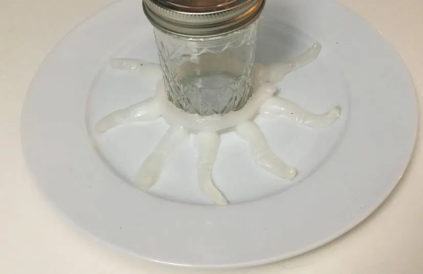
Put Everything Together¶
Put the copper coil burner in the middle of the plate, put wire mesh cage in place around the burner (push the cage down into the silicone a bit), and then turn the Terra Cotta pot upside down and put it on top. The enclosure is complete.
Note: You can decorate the plates with stickers. The plates don’t get hot. If you want, print small instruction labels for quick field use.
Adapt the Enclosure to Available Materials¶
The dinner plate we use as a base is just to provide a flat surface because the canning jars are so skinny and prone to falling over. They are fire-safe, fairly easy to find, and affordable both new and used. The base part doesn’t get hot at all. You can use any portable flat surface. Wood should work fine and you could even drill a large hole for the burner instead of making a silicone ring. Anything non-flammable like glass and metal platters, thick plastic cutting boards, concrete pavers, flat terra cotta platters, and flat pottery pieces would all work fine as a steady base for the heater. It should be several inches bigger than your wire cage and pot in diameter, but you know, be respectful that tents are small and don’t have a ton of space for your 3-foot-long piece of plywood. If you want to add a plastic milk crate to use as a table under the whole thing to raise it off of ground level, some people will appreciate that.
We haven’t found anything that works better than galvanized wire mesh for the cage, since it’s very affordable and easy to work with. You could use other types of wire hardware mesh, there is a 1/4 inch version with smaller holes that works okay. It’s just a bit harder to work with and the wire is usually thinner, so you might have to use tie wire to hook it together. Chicken wire wouldn’t work as it doesn’t hold weight. We haven’t tried other fencing materials.
You can use Terra Cotta platters (the flat plate-shaped pieces that typically go under pots and planters), as a cap on your enclosure instead of a pot. If you do that you need to raise the wire mesh cylinder height by several inches. The platters don’t have a vent hole and the flame will lick out around the edges when it has no place to go. The newer ones are also fairly thin and more prone to cracking if they get too hot. The old, large, thick platters work very well. As a bonus, the platters are flat and can be used as warming surfaces for things like hot drinks.
If you want to use it for more efficient cooking, you will want to cut a wire mesh cage that only about 1 to 1.5 inches taller than the copper burner. The 8-inch one in the primary design above is fine for cooking, but is not as efficient as placing the pan directly above the burner at about 6 inches. You can also make it wider to accommodate a larger frying pan or pot. The wire mesh cylinder can hold a lot of weight, just make it wide enough to be sturdy. (In our tests, depending on the type of fuel and size of the flame, you can simmer water in about 10 minutes and boil it in about 20.) Bigger, thicker Terra Cotta pots are great! We chose the 6-inch ones as the default because they work and they are widely available and affordable. If you go with a bigger pot, just adjust your wire mesh cylinder to a bigger diameter to accommodate it. Circle Math is below.
Bonus Circle Math¶
If you are using different sized Terra Cotta pots and platters for your cap, you need to figure out how long to cut your wire for the cage enclosure to fit them. You can start big and just use trial and error to cut it smaller until it fits inside the pot, but it’s actually pretty easy to figure out with math.
Measure across the Inside of the Terra Cotta Pot opening to get the diameter of the circle you need.
The Diameter [times] Pi [equals] the Circumference - or rather the length of the outside edge of the circle - the length you need to cut your wire mesh to make a circle that size.
Let’s say the pot is 6.5 inches across on the inside. Pi is 3.14.
So… using a calculator to multiply… 6.5 x 3.14 = 20.41
Round up or down as needed. In this case it’s really close to 20.5 inches. Remember to also add an extra inch for overlap. Cut your wire 21.5 inches long and when you bend it into a circle you will have one that is very close to 6.5 inches in diameter.
Troubleshooting¶
Symptom |
Likely cause |
Quick fix |
|---|---|---|
Flame won’t start |
Copper loop not hot enough |
Hold flame at fume hole longer (10-30 seconds), or prime loop by flipping burner briefly |
Flame is very small |
Fuel is water-heavy or soot is insulating coil |
Replace old fuel with fresh higher-percentage alcohol and clean soot from coil |
Flame is too large |
Fume hole is too big for enclosure setup |
Increase cap height, improve ventilation gap, or rebuild with smaller fume hole on next unit |
Burner goes out early |
Fuel mix too diluted or wick not feeding well |
Replace fuel, reseat/replace wick, verify wick reaches fuel in jar |
Excess soot buildup |
Lower alcohol percentage or contaminated fuel |
Use cleaner/higher alcohol fuel and wipe coil periodically |
Maintenance¶
Soot: As we said above in the Fuel section, a bit of light, powdery soot will build up on the copper coil as you burn rubbing alcohol. The lower the alcohol rating, the more soot seems to accumulate. This isn’t dangerous, but it can prevent the flame from heating the copper as efficiently, resulting in a smaller flame. When the copper coil is cool, clean the soot off with a tissue, paper towel, leaf, stick, etc.
Fuel: When using isopropyl, it’s mixed with water. 70% has about 30% water. 90% has about 10% water. As the fuel burns and gets lower, the concentration of water increases, so the flame seems to get smaller as well. Eventually it will go out when there aren’t enough fumes to sustain the flame. When refilling, it’s recommended to dump out the old fuel and add fresh alcohol if the flame is weak.
Wick: If the wicking material falls out of the copper pipe inside the jar - just stick it back in. If it happens a lot, get a thicker piece of cotton cloth to replace it. If the wicking material is thick enough, it won’t fall out.
Seal on top of the lid: Sometimes after a lot of use or if the copper piping gets wiggled back and forth too much the J-B Weld holding it to the lid will crack or loosen from the lid. You can still use the burner, but might lose some fuel to evaporation and it won’t be completely spill proof. You can pull the pipe out of the lid, break and clean off the old J-B Weld, and reapply new J-B Weld. A premium silicone would also work in a pinch. The holes need to be sealed well so the alcohol doesn’t spill or evaporate.
Go Build Something for Your Community¶
That’s it, we’re done giving you advice. This is kind of long because we want you to learn from our mistakes so you can make heaters easier and faster, that’s all.
We have a Twitter and email listed below. As you find better ways to do things or better design options or materials or if you have feedback on usage in different environments, please share with us and the community. Iterative improvement is where it’s at, but don’t spend so long improving things that you never make any heaters. It’s more important to keep people warm than to create the perfectly engineered solution. There is another guide for Can Heaters that work outdoors and in bigger areas. Look for that guide too.
Go make your own heaters. Share warmth with those in need.
Caring for others is hot, actually.
Original guide updated December 2021 - Email: HeaterBloc@Gmail.com - Twitter: @HeaterBloc
Print these out and cut them into little fliers to distribute with heaters.
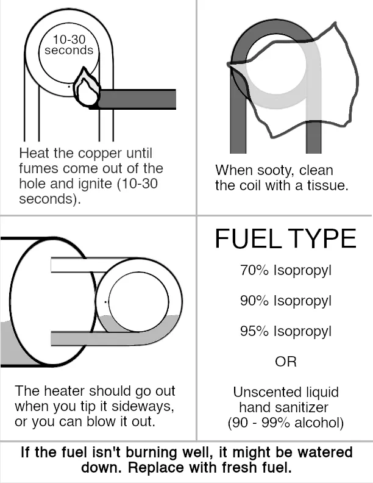